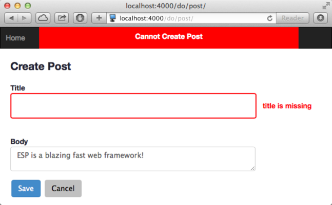

Quick Nav
See Also
ESP MVC Tour
This quick tour of the ESP MVC Framework provides an overview of the ESP generator for Model-View-Controller applications. The generated application will use the esp-html-mvc Pak which provides a server-side MVC framework.
Before starting, first make sure you have read the Quick Start, and the ESP Tour and that you have ESP installed on your system so you can type along as you go. This tour uses the esp application generator.
Creating a New Application
To create a new ESP application, you will use esp, the ESP application generator program. Make a directory named blog and then install the esp-html-mvc Pak.
home> mkdir blog
cd blog
esp install esp-html-mvc
[Save] /Users/mob/git/junk/package.json
[Install] esp-html-mvc 1.0.0-rc0
...
[Info] esp-html-mvc successfully installed
This simple command accomplished quite a bit, including:
- Create a core structure with directories for various parts of the application. Initially, some of these directories are empty, but they will be used as your application grows.
- Installed the esp-html-mvc, esp-mvc and esp-server Paks. You can see these via:
test> esp list esp-html-mvc 1.0.0-rc0 esp-mvc 1.0.0-rc0 esp-server 1.0.0-rc0
- Created a package.json files that configures and control how your application will run.
Conventions
The ESP web framework follows the "convention over configuration" philosophy popularized by Ruby on Rails. This means that ESP adopts certain conventions about where files and directories should be placed and about how names are used. If you work with these conventions, then you need to do little or no configuration. Things will just work.
Here are the most important directories:
| Name | Description |
|---|---|
| cache | Cached compiled controller and view modules |
| client | Client-side scripts, pages and style-sheets |
| client/app | Application views |
| client/paks | Installed Paks |
| controllers | Application controller code |
| db | Database file and database initialization scripts |
| layouts | Server-side web page layout templates |
See the "esp" command documentation for an explanation of the other generated directories.
Access your Application
To access your application enter http://localhost:4000 in your browser. You should see your first application home page.

Scaffolds
Scaffolding is a quick way to generate pieces of your application. Once the esp-html-mvc framework pak is installed, the esp command can generate database tables, views and controllers for you. The command below will create a post database table with a blog post title and post comment body. The title is a string data type and the body is a multi-line text field.
home/blog> esp generate scaffold post title:string body:text
[Create] Directory: client/app
[Create] client/app/post.c
[Create] Directory: app/post
[Create] app/post/post-list.esp
[Create] app/post/post-edit.esp
[Create] Directory: db/migrations
[Create] db/migrations/201404151110250_create_scaffold_post.c
[Compile] db/migrations/201404151110250_create_scaffold_post.c
[Migrate] Apply 201404151110250_create_scaffold_post.c
[Migrate] All migrations applied
[Generate] Complete
This command created:
- A server-side post Controller (post.c)
- Server-side HTML views for listing posts (post-list) and editing posts (post-edit).
- A database migration to create the post database table.
The command also run the migration to create the database and table.
Now if you set your browser to the home page, you will now see an empty listing of blog posts.

Create New Posts
The New Post button directs your browser to the /server/post/ URI. This form is being rendered on the client from the client/app/post/post-edit.html template. Behind the scenes, the browser asks for the /server/post/init URI to determine what are the required input fields for a post.

Fill in the input fields and click OK to add the new blog post.

The home page is now updated with the first post. You can click on the post title or body to edit its contents. This will run the same post-edit.html template that was used to create the post.
On the Server
When OK button is clicked to create a post, the browser invokes the /server/post URI with the HTTP "POST" method to create the blog post. The Appweb server parses this URI and and selects the appropriate request route and handler for the request. It then identifies post as the name of the server-side controller invokes the createPost action routine to service the request. The controller is automatically compiled and loaded if required.
A controller file typically defines many such C functions called actions, that are bound to specific URIs via Appweb routes. Actions are defined using the espDefineAction API in the initialization function of the controller.
A minimal post controller file looks like this:
#include "esp.h"
static void createPost() {
EdiRec *rec = createRec("post", params());
renderResult(updateRec(rec));
}
ESP_EXPORT int esp_controller_blog_post(EspRoute *eroute)
{
espDefineAction(route, "post-create", createPost);
return 0;
}
Actions
The job of the action is to respond to the request and generate the response via views for the client. Here is the list action in the generated post controller.
static void listPost() {
renderGrid(readTable("post"));
}
The list action reads the post table and then renders the table data and schema as a JSON response. The client interprets this JSON data an applies it to the client-side model. Angular uses this model and "data-binding" to paste the data, somewhat auto-magically into the HTML page.
Code Errors
What happens if you make a mistake entering the embedded "C" code in your controller or in an ESP web page. Say you forgot the semicolon in the last example. You will see an error like this in your browser:

If you look in the appweb console log, you will see details about the request that failed.
appweb: 2: Error: Cannot run command clang -c -DBIT_DEBUG -g -Wall -DPIC \
-fPIC -arch x86_64 /home/apps/blog/controllers/post.c -o \
/home/apps/blog/cache/controller_74bffd199d8b4c675e1f693d86eef471.o
/home/apps/blog/controllers/post.c:21:38: error: expected ';' after expression:
renderGrid(readTable("post"))
^
Validations
Complete validation of all user entered data is essential for a robust and secure application. The validation may be performed at the client, but must also always be fully implemented on the server incase the client or network connection is compromised. ESP provides flexible validation methods to help ensure the data you save at the server is correct.
You can add calls to validate record data before it is saved to the database. To do this, edit the controllers/post.c file and add calls to ediAddValidation.
ESP_EXPORT int esp_controller_post(EspRoute *eroute, MprModule *module)
{
Edi *edi;
/* Existing code */
edi = getDatabase();
ediAddValidation(edi, "present", "post", "title", 0);
ediAddValidation(edi, "present", "post", "body", 0);
ediAddValidation(edi, "unique", "post", "title", 0);
return 0;
}
This will cause the database to automatically ensure that the title and body fields are not blank and that the title is unique in the post database table.
If you click OK in the Post edit web page without entering any data you will see the following:
This automatically identified the input fields in error and generated a summary of the errors above the form. Of course, this default error highlighting behavior can be overridden if desired by modifying the application style sheets.
Other validation types include: checkNumber, checkBoolean, checkDate and checkFormat. You can also define new validation types by calling ediDefineValidation.
Edit the Home Page
ESP applications based on Angular use a single home page that applies different view templates to modify the content. Consequently, the index.esp home page is typically also the master application layout page. Modifying index.esp will modify all the views presented to the client.
Learn More ...
That concludes the a quick tour through some of the capabilities of the ESP web framework.
To learn more, please read:
You may also like to ask questions at the ESP Support Forum.